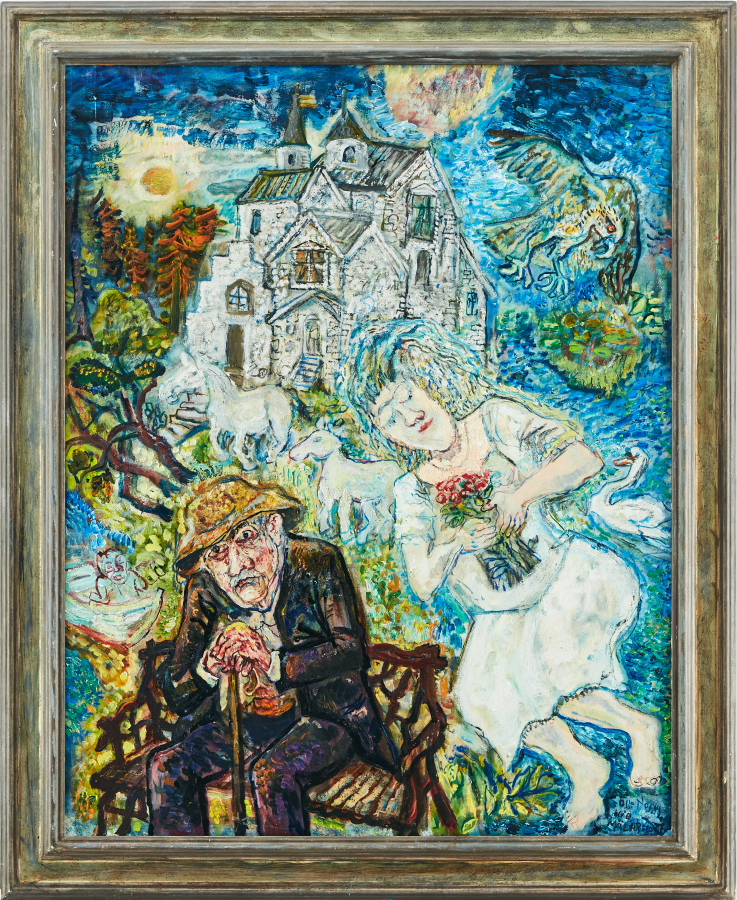

Olle Nordberg
Pris: 32000 kr
Olle Nordberg var en uppskattad konstnär som studerade vid Konstakademin.
Han ställde ut flitigt och är representerad på flera svenska museer, inklusive Moderna Museet i Stockholm.
Hans målningar kännetecknas av en barnboksliknande estetik som samtidigt har ett djupt och komplext symboliskt innehåll.
